Jusqu’ici, on a appris à :
👉 En entreprise, ce n’est pas suffisant.
Une bonne analyse doit survivre au temps, aux collègues et aux décisions.
Comment concevoir une analyse de données
qui reste valable, compréhensible et utile
au-delà du notebook et du stagiaire qui l’a produite ?
Trois exigences (pro) :
👉 Ce CM parle moins de code, et plus de durabilité.
Dans un cours, on vise souvent : “le bon résultat”.
En entreprise, on vise plutôt :
un raisonnement stable + des décisions discutables + un livrable réutilisable
Vous rendez votre analyse.
Six mois plus tard :
👉 Personne n’ose toucher à votre notebook.
Ce qui échoue n’est pas le code.
Ce qui échoue, c’est la transmission du raisonnement.
Une analyse professionnelle doit :
👉 L’analyse devient un objet collectif.
Une analyse n’est pas un résultat,
c’est un support de décision.
👉 Elle doit expliciter ce qu’on peut conclure…
et ce qu’on ne peut pas.
👉 L’analyse n’automatise pas la décision.
👉 Un chiffre sans hypothèses = un risque.
Trois éléments oubliés :
👉 Sans ça, l’analyse n’est pas transmissible.
À minima, un autre doit pouvoir répondre à :
Une bonne analyse éclaire une décision,
elle ne la remplace jamais.
Dans le temps :
👉 Une analyse figée devient rapidement fausse.
On ne rend pas une analyse robuste en la rendant plus complexe.
On la rend robuste en rendant ses hypothèses visibles et modulables.
Deux niveaux à distinguer :
👉 Une analyse sérieuse sépare les deux.
Imaginez un indicateur de “clients actifs”.
👉 Les disputes pro viennent souvent des scénarios déguisés en invariants.
👉 On change les paramètres, pas la logique.
Une analyse robuste ne “prouve” pas.
Elle montre que la conclusion
tient dans une plage raisonnable de scénarios.
👉 Un résultat qui s’effondre au moindre réglage est fragile.
👉 Une analyse devient un outil de discussion.
Une analyse robuste n’est pas figée :
elle est paramétrée.
👉 Le message se perd.
La valeur d’une analyse ne dépend pas de :
Elle dépend de la clarté du message transmis.
Communiquer une analyse, c’est raconter :
👉 Pas le pipeline complet.
Une bonne synthèse tient souvent sur :
👉 Tout le reste est en annexe.
Un non‑data veut surtout savoir :
👉 Le code reste en annexe.
👉 Plus vous montrez, plus vous diluez.
Une analyse qui ne peut pas être expliquée
simplement ne sera pas utilisée.
Votre responsable demande :
“J’ai 2 minutes. C’est quoi le message ?”
👉 Objectif : une synthèse décisionnelle.
Une “slide décision” contient :
Conclusion : “L’indicateur X augmente sur 12 mois.”
Faits :
Limites : “Résultat sensible à la définition de X (fenêtre 30j vs 90j).”
Une recommandation pro ressemble à :
“Si l’objectif est Y, alors on recommande A.
Si la contrainte Z s’impose, alors on recommande B.”
👉 L’analyse outille une décision : elle n’impose pas.
On observe une moyenne…
mais une moyenne seule peut être trompeuse.
👉 L’écart-type sert à répondre à une question simple :


À mesurer à quel point les valeurs sont dispersées autour d’une moyenne.
👉 Il ne “corrige” pas la moyenne, il en donne le contexte.
👉 La question n’est pas “comment le calculer”,
mais “peut-on raisonnablement résumer par une moyenne ?”
Une bonne analyse ne répond pas seulement à la question d’aujourd’hui :
elle prépare les questions de demain.
Dans la suite :
👉 Objectif : penser comme un data scientist professionnel, pas comme un exécutant.
Comment rendre une analyse robuste au changement ?